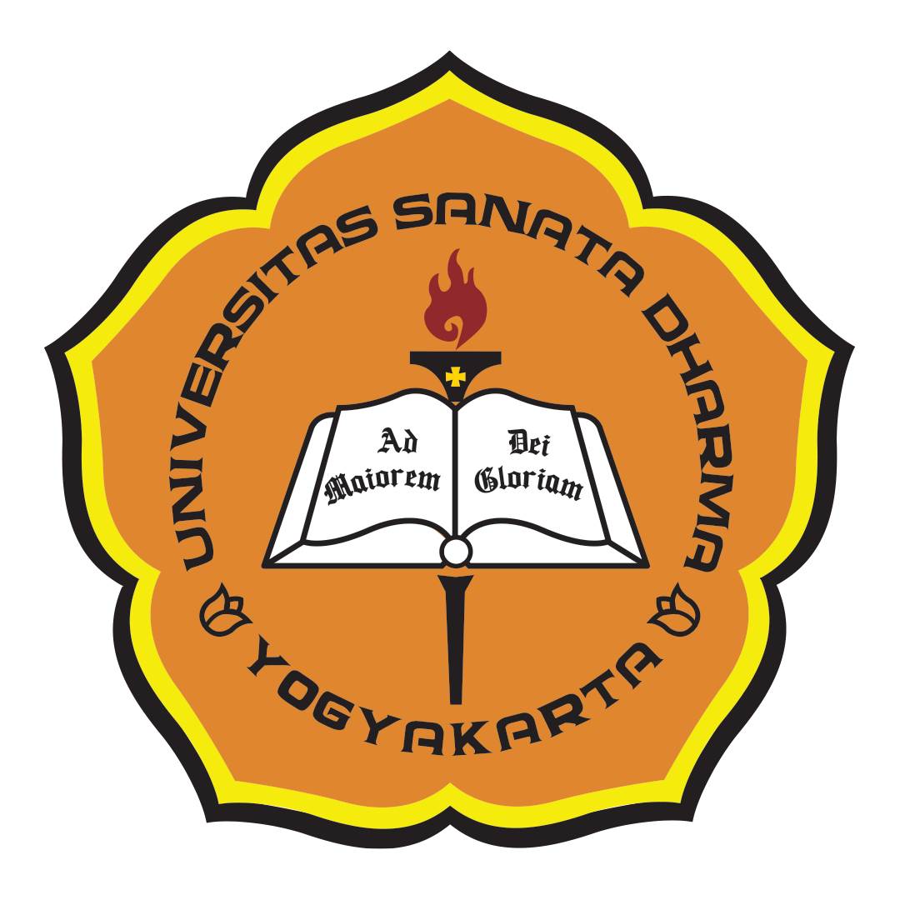

Halo, nama saya Benedictus Farrel saya lahir di Lampung dan saya merupakan kakak dari 2 bersaudara. Hobi saya adalah bermain gitar, mendengarkan musik lewat spotify, serta bermain basket. Makanan favorit saya yaitu rendang dan segala makanan pakai sambal matah. Saya adalah mahasiswa Sadhar.
Saya sekarang di Sanata Dharma angkatan 25.
Saya berada di jurusan informatika.
Mengikuti berbagai kegiatan ormawa seperti band dan basket.
Saya juga suka belajar HTML karena bisa membuat halaman
web sederhana.

Aku merupakan kakak dari 2 bersaudara. Aku memiliki 1 adik laki-laki.
Aku sekarang berumur 19 tahun.
Saya memiliki lirik lagu favorit seperti ini: Indonesia tanah airku tanah tumpah darahku Di sanalah aku berdiri jadi pandu ibuku Indonesia kebangsaanku, bangsa dan tanah airku Marilah kita berseru Indonesia bersatu Hiduplah tanahku, hiduplah negeriku Bangsaku, rakyatku, semuanya Bangunlah jiwanya, bangunlah badannya Untuk Indonesia Raya Indonesia Raya merdeka merdeka Tanahku negeriku yang kucinta Indonesia Raya merdeka merdeka Hiduplah Indonesia Raya. Ya ini adalah lagu kebangsaan Indonesia yang membuat aku bangga menjadi wni.
Beberapa lagu favorit saya:
Beberapa pemain basket favorit saya:
| Rank | Nama | Keterangan |
|---|---|---|
| ##1## | Rendang | Nyami |
| ##2## | Ayam Sambal matah | nyumi |
| ##3## | Sei sapi | Sedapp |